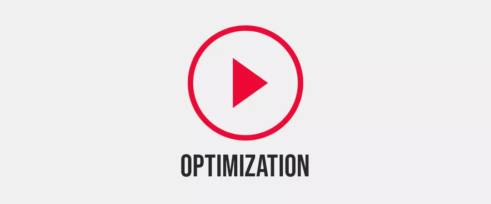
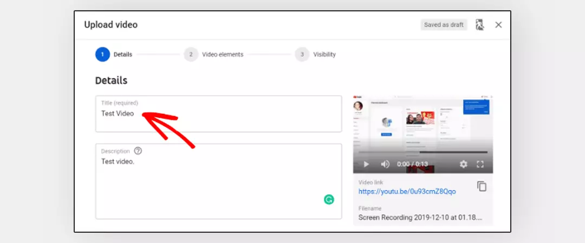
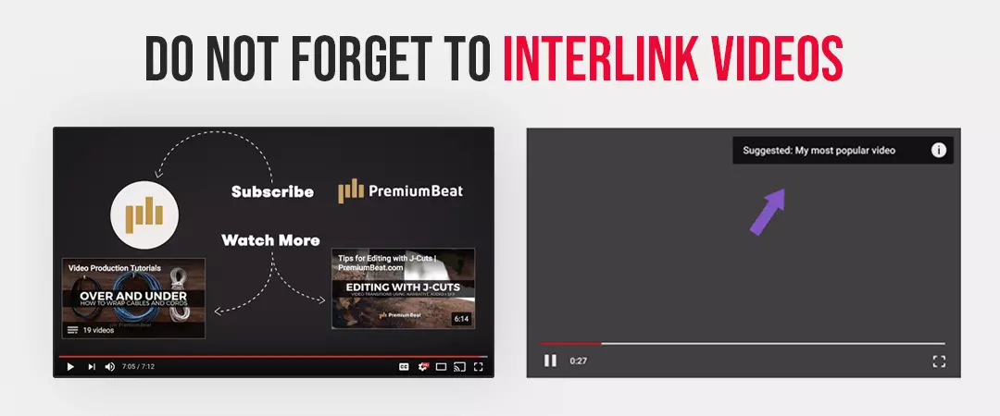
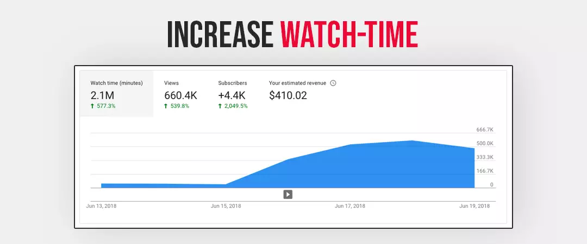
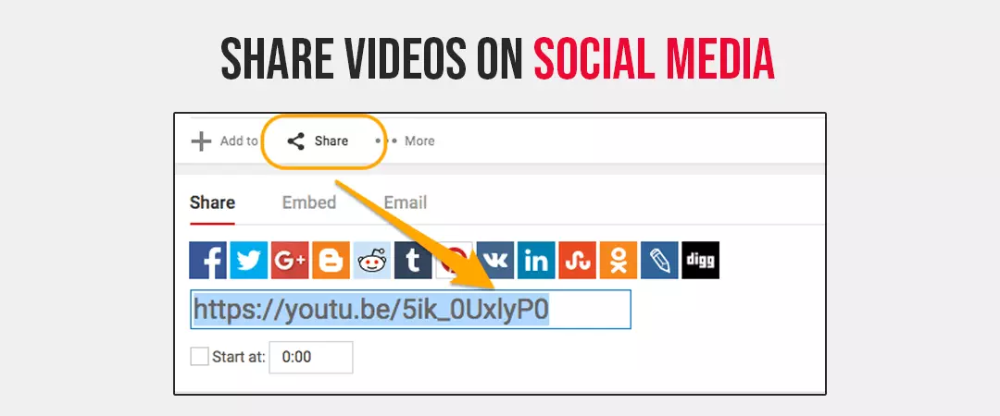
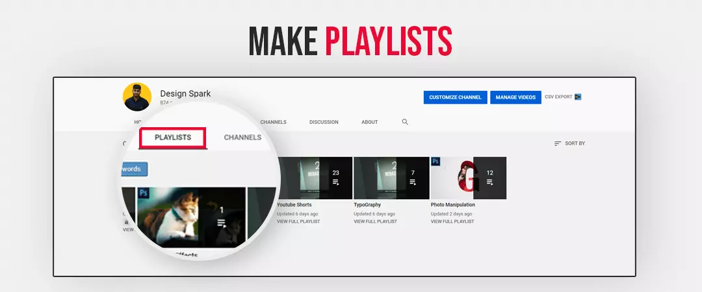
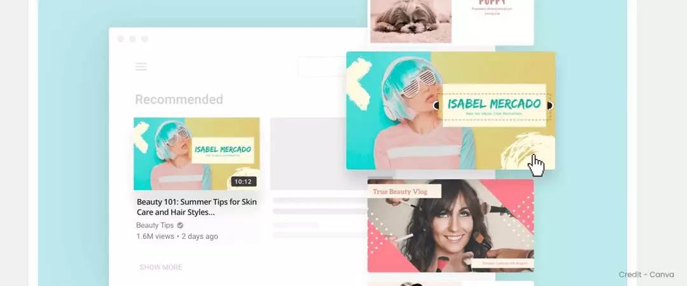
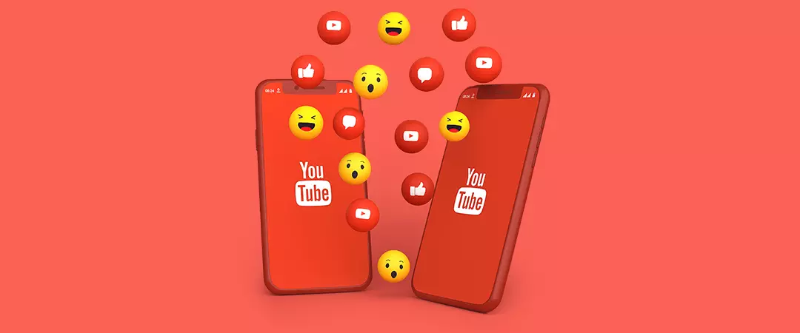

Contents
- 1. How to Optimize your YouTube videos to be in recommendation
- 2. Optimize your video Titles
- 3. Optimize the description and tags of your video
- 4. Do not forget to interlink videos
- 5. Focus on getting increased watch-time
- 6. Share videos on social media to get a boost in session start
- 7. Group your videos into playlists to retain your viewers
- 8. Create an eye-catching thumbnail
- 9. Always insert engagement boosters
How to Optimize your YouTube videos to be in recommendation

Video optimization is the key to getting found on this platform. You can learn about how to rank YouTube videos The difference between successful and unsuccessful creators is that those who achieved recognition did not just dump their content on the platform after production – they put in efforts optimizing every aspect of their video. The very basics of optimization include YouTube keywords research and putting relevant ones in your video title, description and tags.
Let us take it one step at a time:
Optimize your video Titles

The title of a video is capable of doing the following things, which can influence the YouTube recommendation algorithm.
Attract people to click the video
Your videos will start accumulating watch time only after users click on them. The video Title is a crucial factor that makes people watch your video.
You can get ranked high for a keyword
When you include your targeted keyword into your title, you are helping YT understand your content and show your videos to people who are searching. This platform will recommend your video to a user who is watching relevant content. Hence, your title is vital to secure your place in YouTube suggested video section.
Tell YouTube that your content is relevant to each other
By including related keywords in your video titles, you can establish a relation between all your content. For example, A channel with a video titled “Arsenal 0 - 1 Everton | Premier League Highlights” would have secured a spot in the YouTube suggestion section for his video “Man United 4 – 1 Newcastle | Premier League Highlights”.
Optimize the description and tags of your video
Description and tags are crucial facets of your meta-data – they are some of the only tools you can utilize to optimize your video for YT and your audience.
Here are some points to consider for your description and tags:
- Your video description should consist of a minimum of 3 sentences followed by links to your social and web platforms.
- Your channel description should be included at the bottom and should be 3 – 5 sentences long.
- Drive your tags from your primary keyword. You can use tools such as rapidtags.io to find relevant tags.
- Keep your tag limit to 10 -12 focused on the primary keyword.
- Always include 4 – 5 tags that are generic in all your videos.
Do not forget to interlink videos

As a YT creator, you have to realize that the success of all your videos far outweighs the triumph of a single video. Hence your target should be to appreciate the value of all your content. One proven way to control YouTube recommendation algorithms is by interlinking your videos via annotations. Interlinking is an excellent way of getting people to watch more videos on your channel. Card, annotations, description, and End screen are ideal for providing links to related videos.
Although no facts indicate that interlinking activities directly influence the platform’s suggestion algorithm, we can say for sure that these actions resulted in higher watch duration and lengthier sessions. As we already know, the algorithm is programmed to promote content with a high view and session duration - interlinking activities can at most indirectly impact YT suggestions. Such actions are worthy of pursuing, looking at the minimalistic time and effort it takes to undertake them.
Focus on getting increased watch-time

Watch-time, as a term, determines the time viewers spent watching your videos. Videos that boast longer watch-time automatically get ranked higher and are shown frequently as recommended videos.
Learn here –
YouTube suggested videos have some of the highest watch-time recorded on the platform. One widely popular fact is that YT has configured its algorithm is to promote videos that bring in longer watch sessions. Hence every YouTuber has to make sure that a sizeable portion of their audience finishes watching the entirety of their videos, with the least number of drop-offs. You cab achieve Higher watch-time through the aggregation of multiple factors. Some of them include producing videos of shorter duration and creating a playlist. To get a bird's eye view of what videos are appealing or appalling to your audience, you can look at the video metrics like the audience retention rate graph or the average view duration.
Here are some tips to increase overall watch time: -
Share videos on social media to get a boost in session start.

You get a new session that starts every time a user begins his/her watching spree from your video and stays on your channel after the video ends. When more people land on this platform from your video, your video will receive a higher watch-time score. Session start makes up 20 – 25 percent of total watch-time. To increase the ‘number of session’ starts, you need to get people to your channel by sharing your video links to your social media handles. As soon as you produce fresh content, make sure you post the link on Twitter, Facebook, and Instagram. You can also embed video into your blogs. Some creators use the Instagram bio to include links to every new video.
Group your videos into playlists to retain your viewers

Apart from users starting their session from your videos, you also want them to stay and leave YT from one of your videos. To retain the audience on your channel for a longer time, you need to group your videos into playlists. Grouping can be thematically or by relevancy. Provide each playlist with a name that describes the playlists content. Also, make it a habit to link playlist into your videos, it can be in the video description or into the video itself.
Create an eye-catching thumbnail

Create video thumbnail very carefully as it is crucial to get people to click on your video. The more clicks you accumulate, the higher watch-time you can generate. But there is also a significant downside. Misleading thumbnails will cause people to drop from your videos as soon as they click on them, resulting in lower overall views and watch-time – this can negatively impact your videos' chances to appear in the YouTube recommended section.
Always insert engagement boosters

Views are important, but they should not be the sole criteria for success. Engagement is just as or even more crucial than views. Apart from just views, every creator on the platforms should get viewers to engage with their content. Always strive to increase YouTube engagement and it can be in the form of like/dislike, comments, and shares. A clear indication that your audience likes what you produce is found by the engagement a particular video gets – more quality interactions mean that your audience wouldn’t mind watching more of your content.
Engagement is a proven way to get recommended on YouTube; videos that receive lots of likes, comments and shares are given leeway in the search result by the algorithm. A popular way to coerce your audience to take action is by requesting them to do something in your videos. But besides the more common approach, there are other ways of increasing engagement, such as posting a comment on your videos or asking your audience questions to encourage response. You will not only see a sharp increase in comments posted, but you would have also to influence YouTube recommendation algorithm to suggest your videos to more people. You can also use the comment section of older videos to share links to recent videos.
I hope you found this as a helpful guide on how to appear in the YouTube recommendations!
Feel free to share.